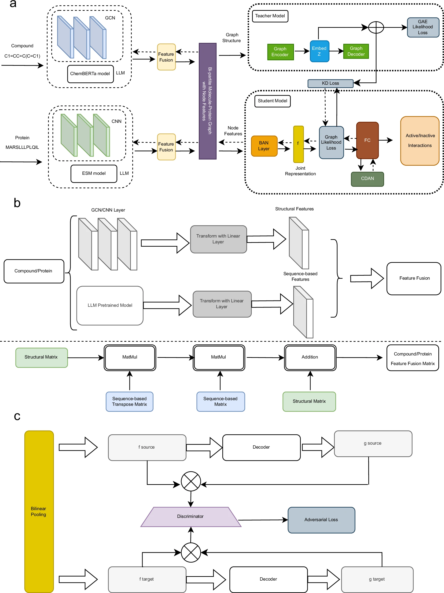
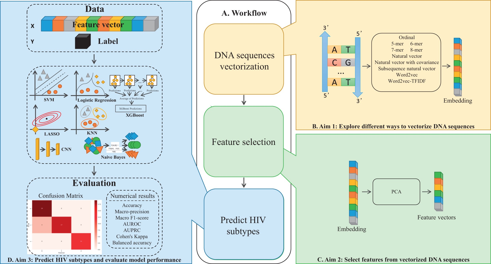

I worked on several research and machine learning projects during my studies and internships. Selected projects are listed below:

Understanding compound-protein interactions is key to early drug discovery. We present GraphBAN, a graph-based framework for inductive prediction of these interactions using compound and protein features. Unlike traditional models, GraphBAN generalizes to entirely unseen compounds and proteins. It uses a teacher-student knowledge distillation architecture, where the teacher leverages network structure and the student learns from node attributes, and includes a domain adaptation module for cross-dataset generalization. Experiments on five benchmarks show GraphBAN outperforms ten baselines, with a case study on the Pin1 protein highlighting its real-world potential.

HIV-1 subtype classification is critical for effective infection management, but traditional alignment-based methods are slow and impractical for large datasets. Alignment-free approaches, which use numerical representations and machine learning, offer scalability but often underperform on rare subtypes. We present a comprehensive analysis of sequence vectorization techniques, including k-mer and Word2Vec embeddings. A k-mer-based XGBoost model achieved a balanced accuracy of 0.84, while a Word2Vec-based SVM showed strong precision. Our findings highlight the potential of natural language-inspired methods to improve subtype classification and support the development of subtype-specific treatments.
This project applies machine learning to survival analysis, which models the time until an event such as death or disease recurrence. A major challenge in this field is censored data, where the event has not occurred by the end of the study. We explore the Accelerated Failure Time (AFT) model, which directly relates covariates to survival time by modeling how they speed up or slow down the event. In addition, we evaluate machine learning methods that can handle complex, nonlinear patterns in censored data. By comparing these models, the project aims to improve the accuracy and flexibility of survival predictions.